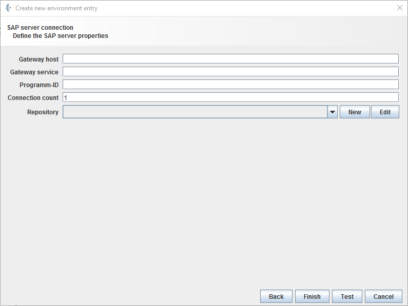

SAP server connection

Topic content
Description
Environment entries for SAP server connection are used to declare the parameters to access the gateway of a SAP system via Remote Function Call(RFC). The entry declares the access point at a SAP system to receive messages.
Purpose of object
It is commonly used to declare the parameters for the SAP RFC Receiver. The channel receives data from a SAP system.
Configuration

Step by Step
1.Create an Environment entry of type SAP server connection.
2.Select the : Add the host or IP of the gateway you want to access at SAP system, e.g. sdcsta10.charite.de or 192.168.2.6.
3.Select the : Add the port or name of the gateway service, on which Orchestra will access the SAP system.
4.Select the: Register Id of the RFC server program at SAP gateway, e.g. ORCHESTRA.
5.Select : Maximum number of connections that can be active at a time.
6.Select : To read the received messages from SAP system in the right way, it is necessary to fetch the IDOC file from SAP. This file declare the syntax of received messages. Therefore an authentication at the SAP system is necessary, which can be done by an environment entry of type SAP client connection. Whit this parameters it is possible to fetch the required information.
7.Click : An alert window will appear, which shows whether the test of the connection was successful.
8.If the test was successful. Click on .
|
You can find and declare several of the configurations in file C:\Windows\system32\drivers\etc\services. File Example: sapgw00 3300 # SAP gateway service port
>In case of this record you can put either 3600 or sapgw00 as Gateway service. |